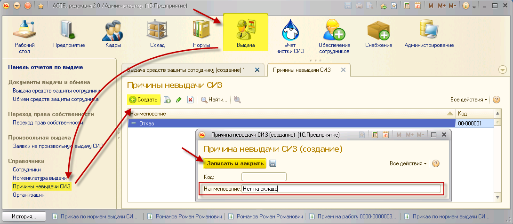

Прежде, чем производить выдачу СИЗ сотрудникам, необходимо заполнить справочник, отображающий возможные причины невыдачи СИЗ. В дальнейшем введенные данные потребуются для заполнения документов выдачи средств защиты сотруднику.
Для этого зайдите в раздел «Выдача», справочник «Причины невыдачи СИЗ», и нажмите на кнопку «Создать». В открывшемся окне введите наименование причины невыдачи. Сохраните изменения, нажав на кнопку «Записать и закрыть».
